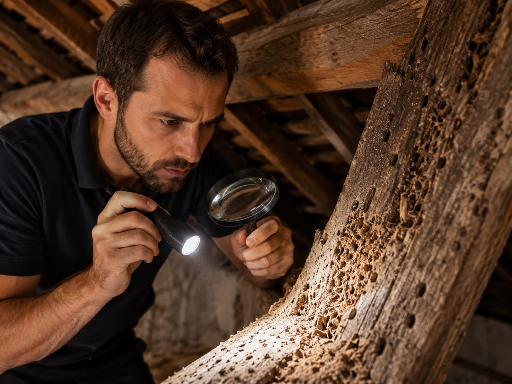

Faites le test : un de ces signes chez vous ?
- Des petits trous à la surface du bois
- De la sciure fine ou des copeaux au sol
- Un bois vermoulu, qui s'effrite ou sonne creux
- Des cordonnets de terre ou des galeries visibles
- Des insectes ailés ou de grandes fourmis à l'intérieur
Un seul de ces signes suffit pour nous contacter : décrivez ce que vous voyez, le devis est gratuit et sans engagement.
Bois vermoulu, trous dans le bois, sciure : que faire ?
Associez ce que vous voyez à l'insecte responsable
- Trous ronds de 1 à 3 mm + sciure fine et claire : vrillette (vers de bois)
- Trous ovales de 6 à 10 mm + bruits de grignotage la nuit : capricorne des maisons
- Bois feuilleté qui sonne creux, cordonnets de terre, aucune sciure : termites
- Copeaux grossiers + grandes fourmis noires le soir : fourmis charpentières
- Sciure très fine comme de la farine sur bois clair : lyctus
- Bois brunâtre qui se casse en cubes, odeur de champignon : mérule ou autre champignon lignivore
Des insectes dans le bois, est-ce grave ?
Des trous, de la sciure ou un bois vermoulu signalent que des larves creusent vos bois depuis des mois, souvent des années. Tant que l'infestation est active, les dégâts progressent en silence : un parquet ou un meuble se remplace, une charpente attaquée peut coûter des dizaines de milliers d'euros si on laisse faire. La seule façon de savoir si c'est grave, c'est de faire vérifier : l'activité récente se détecte au sondage et à la fraîcheur de la vermoulure.
Vous n'avez pas à deviner : décrivez-nous ce que vous voyez. Notre technicien identifie l'insecte en cause et l'étendue des dégâts, et vous dit honnêtement si un traitement est nécessaire.
Comment se déroule la visite technique ?
- 1. Inspection des combles, charpentes, planchers, plinthes et bois accessibles
- 2. Sondage des bois pour mesurer la profondeur des dégâts et détecter une activité en cours
- 3. Identification de l'espèce : vrillette, capricorne, termites, fourmis charpentières, lyctus ou champignon
- 4. Compte rendu clair et devis détaillé uniquement si un traitement est nécessaire

Et si un traitement est nécessaire, combien ça coûte ?
Tout dépend de l'insecte et de l'étendue : un traitement localisé reste de l'ordre de quelques centaines d'euros, un traitement de charpente par injection démarre à partir de 1 500 €. Vous recevez un devis gratuit, précis et sans engagement après le diagnostic : le prix est posé noir sur blanc avant toute décision.
Un expert du traitement du bois près de chez vous
LSR Habitat est une entreprise spécialisée dans le traitement du bois et des insectes xylophages en Gironde. Entreprise familiale, sans sous-traitance, produits certifiés, garantie de résultat, 5,0/5 sur 19 avis Google. Nous intervenons dans toute l'Aquitaine, avec une présence quotidienne en Gironde : Bordeaux et sa métropole, Bassin d'Arcachon, Libournais.